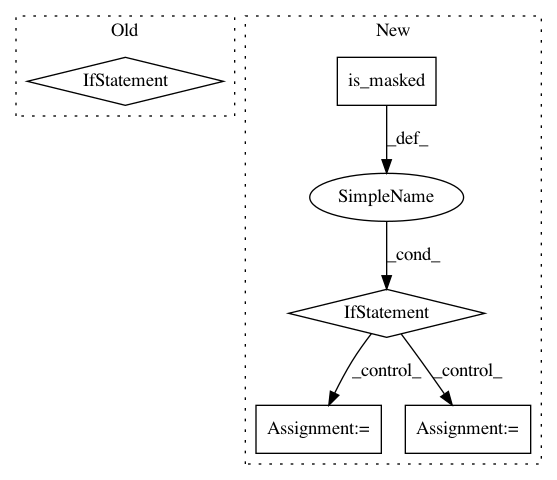

b5474182feb30125bc78ebff838ba7bb9000de78,chaco/contour_line_plot.py,ContourLinePlot,_update_contours,#ContourLinePlot#,113
Before Change
xs = linspace(xdata[0], xdata[-1], len(xdata)-1)
ys = linspace(ydata[0], ydata[-1], len(ydata)-1)
xg, yg = meshgrid(xs, ys)
if self.orientation == "h":
c = Cntr(xg, yg, self.value.raw_value)
else:
c = Cntr(xg, yg, self.value.raw_value.T)
self._cached_contours = {}
for level in self._levels:
self._cached_contours[level] = []
traces = c.trace(level)
After Change
def _update_contours(self):
Updates the cache of contour lines
if self.value.is_masked():
// XXX masked data and get_data_mask not currently implemented
data = self.value.get_data_mask()
mask &= isfinite(data)
else:
data = self.value.get_data()
mask = isfinite(data)
x_data, y_data = self.index.get_data()
xs = x_data.get_data()
ys = y_data.get_data()
xg, yg = meshgrid(xs, ys)
In pattern: SUPERPATTERN
Frequency: 3
Non-data size: 5
Instances
Project Name: enthought/chaco
Commit Name: b5474182feb30125bc78ebff838ba7bb9000de78
Time: 2016-11-16
Author: cwebster@enthought.com
File Name: chaco/contour_line_plot.py
Class Name: ContourLinePlot
Method Name: _update_contours
Project Name: enthought/chaco
Commit Name: b5474182feb30125bc78ebff838ba7bb9000de78
Time: 2016-11-16
Author: cwebster@enthought.com
File Name: chaco/contour_poly_plot.py
Class Name: ContourPolyPlot
Method Name: _update_polys
Project Name: matplotlib/matplotlib
Commit Name: a23a30b0290df6f1a9458bf7e0826dce2202189b
Time: 2018-12-12
Author: efiring@hawaii.edu
File Name: examples/units/basic_units.py
Class Name: BasicUnitConverter
Method Name: convert